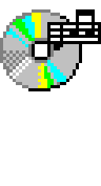
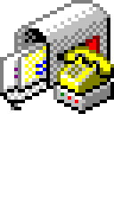
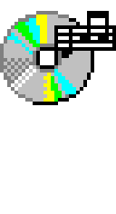
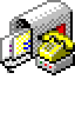
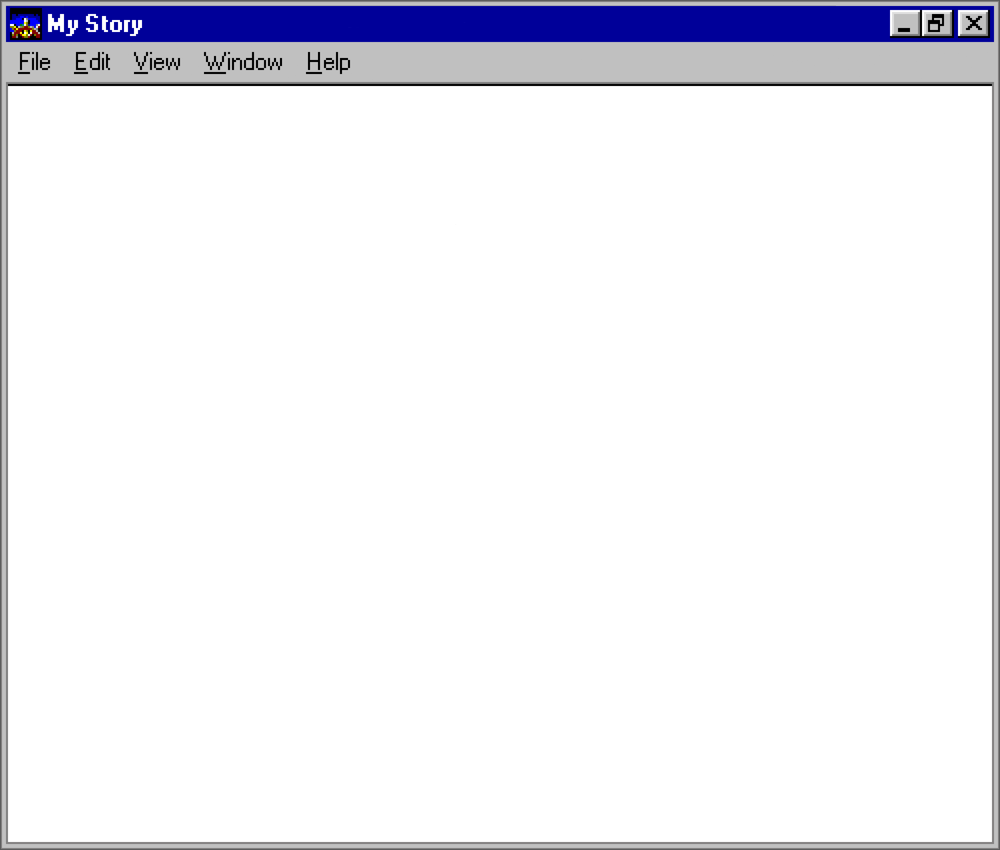

Howdy! My name's Ryan and I took this silly idea WAY TOO FAR!!! But hey,
the fallacy of sunk cost is nothing if not motiviating. At least I learned a few things
in the process...
Anyway, this is my first attempt at making a website since probably somewhere around middle
school, hence the theme. I figured that it couldn't hurt to pick it back up right where I
left off. :)
I grew up in Savannah, GA and went to high school at the Savannah Arts Academy. "SAA" is a
publicly-funded, fully-accredited, arts magnet high school, so I really lucked out there. I
studied both electric and double (upright) bass at SAA and then moved up to Atlanta in 2006
to attend the Atlanta Institute of Music and Media.
I've been the bassist of my main band, Little Tybee, for twelve years now and boy, that time flew.
You can check out our stuff under my music page. (We're "sort of not unfamous", but we're all
humble folks and I hate looking like a braggart. Don't tell anyone I said that!)
Thanks for stopping by!